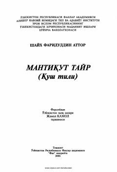

MTSharq mumtoz adabiyotining yirik tasavvufiy dostoni.
Fariduddin Attorning mashhur "Mantiqut tayr" dostoni Sharq mumtoz adabiyoti va tasavvuf ta'limotining yirik namunalaridan biridir. Asar fors tilidan O'zbekiston xalq shoiri Jamol Kamol tomonidan tarjima qilingan bo'lib, insonning Haq yo'lidagi mas'aqqati va ruhiy kamolotini qushlar timsolida ochib beradi.